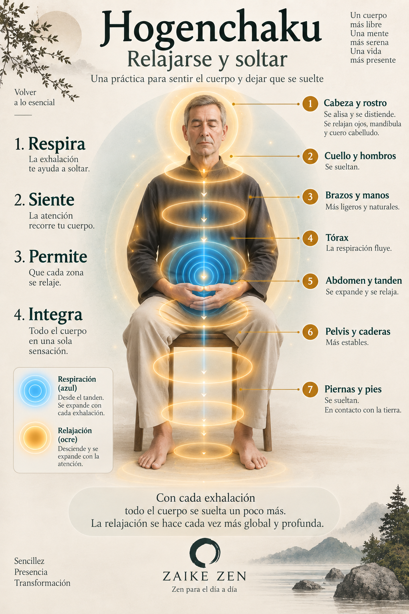

Hogenchaku
Relajarse y soltar
La práctica
Esta práctica se realiza después de acomodar la postura, al inicio de la meditación sentada, para continuar profundizando poco a poco y permitir que la atención se dirija hacia nuestras sensaciones corporales de una forma sistemática y progresiva, sin forzar ni imponer. Lo importante es conocer bien la práctica y dejarse llevar por ella, sin forzar y sin rechazar, como si nuestro cuerpo ya supiese lo que tiene que hacer y no fuese necesario tomar ninguna decisión.
Partiremos de la postura sentada que sea habitual en nuestra práctica; en nuestro caso, sentados en una silla, con un cojín bajo los isquiones, las caderas ligeramente más elevadas que las rodillas y la columna vertebral bien erguida, sin forzar los arcos de movilidad, simplemente manteniendo una postura estable y equilibrada, como ya hemos descrito anteriormente.
Con las manos en el tanden o sobre los muslos, comprobamos que los hombros estén relajados, los codos próximos a los costados y la cabeza alineada con el tronco, de tal manera que el peso de la parte superior del cuerpo descanse sobre los isquiones de la pelvis. En la parte inferior, las rodillas permanecen paralelas y alineadas con las caderas, transmitiendo el peso hacia las plantas de los pies, también paralelos y completamente apoyados sobre el suelo.
Chequeamos la postura percibiendo que estamos cada vez más estables y equilibrados, hasta alcanzar las sensaciones adecuadas para mantener la inmovilidad durante el tiempo que dure la meditación.
A continuación, nos fijamos con detenimiento en los diferentes equilibrios que componen el equilibrio general del cuerpo: cómo la cabeza se equilibra sobre los hombros, cómo los brazos descansan respecto al tronco y cómo la parte superior del cuerpo se equilibra con la pelvis y la parte inferior hasta llegar a las plantas de los pies. Con facilidad observaremos que muchas partes del cuerpo no son necesarias para mantener la postura y que, progresivamente, pueden relajarse. Del equilibrio empieza a surgir la relajación.
Podemos observar, por ejemplo, cómo los músculos de la frente se alisan, el entrecejo se distiende y los párpados se relajan, junto con los músculos que mueven los ojos. La boca, las mejillas y los músculos de la expresión también se sueltan. Poco a poco percibimos cómo los músculos de la masticación se relajan desde la mandíbula inferior hasta las sienes, y cómo el cuero cabelludo participa también de esta sensación de distensión hasta abarcar toda la cabeza.
Nada ha cambiado en nuestra postura y, sin embargo, sentimos que la cabeza está más relajada. Esa relajación puede comenzar a descender por la nuca hasta los hombros. Ponemos la atención en estas partes del cuerpo y, al pasar sobre ellas, dejamos que respondan espontáneamente con una sensación de distensión.
Poco a poco llegamos a los brazos. Recorremos primero uno y después el otro, sintiendo cómo se sueltan músculos, tendones y ligamentos mientras las articulaciones encuentran una posición cada vez más natural. Antebrazos, muñecas, palmas y dorsos de las manos, hasta alcanzar cada uno de los dedos. Cada extremidad superior se va soltando con el paso de nuestra atención y se incorpora a las partes del cuerpo que ya están relajadas.
Los músculos del pecho y de la caja torácica también se distienden. La respiración abdominal permite que la zona intercostal permanezca más relajada mientras el abdomen se expande con la inhalación y regresa pasivamente durante la exhalación. La relajación que comenzó en la cabeza sigue descendiendo ahora por el tórax y el abdomen.
Nos fijamos en el tanden y en los movimientos que produce la respiración, que poco a poco se hace más espontánea y natural. La relajación del vientre se extiende a la pelvis y a las caderas y, al soltarse estas zonas, la postura puede ajustarse todavía mejor.
Muslos, piernas y pies van distendiéndose progresivamente hasta que nuestra atención alcanza las plantas de los pies. De esta manera, la relajación ha recorrido todo el cuerpo, desde la cabeza hasta el suelo.
La respiración es cada vez más fácil y las sensaciones del cuerpo, que hasta este momento percibíamos de forma parcial, comienzan a integrarse en una sensación global. Ya no necesitamos recorrer cada parte por separado. Sentimos el cuerpo entero.
Con cada exhalación dejamos que todo el cuerpo se suelte un poco más, manteniendo la postura inmóvil, estable y sin esfuerzo. La relajación se hace cada vez más global y profunda.
A medida que vamos relajando el cuerpo, vamos también soltando tensiones emocionales y pequeñas contracturas. Nos abrimos y nos dejamos llevar, profundizando en una atención global sobre nuestro cuerpo que favorece una sensación creciente de armonía y bienestar.
El recorrido de la relajación

Práctica guiada
Puedes utilizar este audio para acompañar la práctica de Hogenchaku.